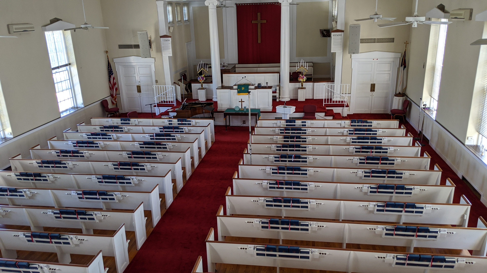
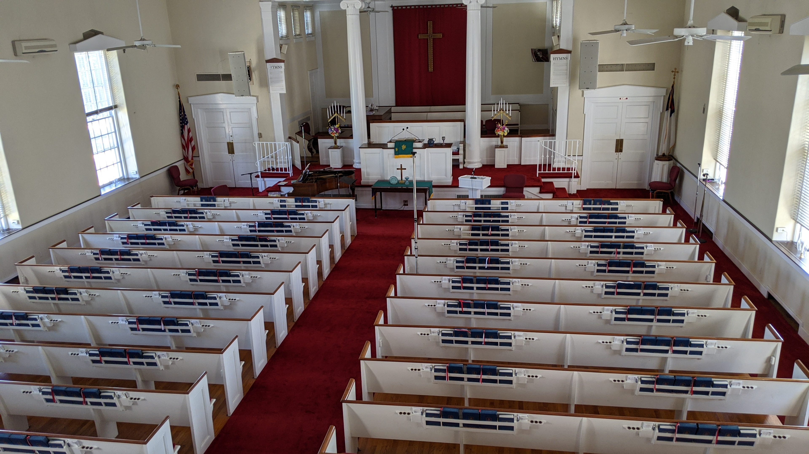

Finally got my drone out of the box and took it for a flight. It was amazing, can't wait to try
this other places.
Gallery
Emergency Stream Project
I never wanted to be a twich streamer, but I also didn't expect the world to lock down for
months. Since people can't go to church, church needs to come to the people. so on short notice
I learned how to stream and began cobbling a
small setup together. Several iterations latter I think I build a great setup that will extend
the reach of the church.
Many years ago now my cousin and I got together to celebrate a shared fandom of starwars buy
building some prop ready light sabers. Slip joint drain pipe from a hardware store, electronics
from radio shack, and a dremel rotary tool
combined for a certain kind of magic.


 
